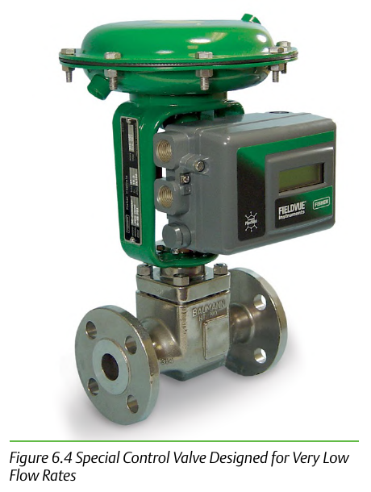

Low-Flow Cv Service: A Tolerance Problem

- 1Standard trim tolerances can't hold Cv as low as 0.03 (standard bodies) or 0.000001 (specialty lab/pilot-plant valves)
- 2Special trims are machined to close tolerances to compensate
- 3A tolerance problem, not a materials problem
Control Valve Handbook, 6th ed., Fig. 6.4. Component Index: cvh-cmp-low-flow-cv-control-valve.